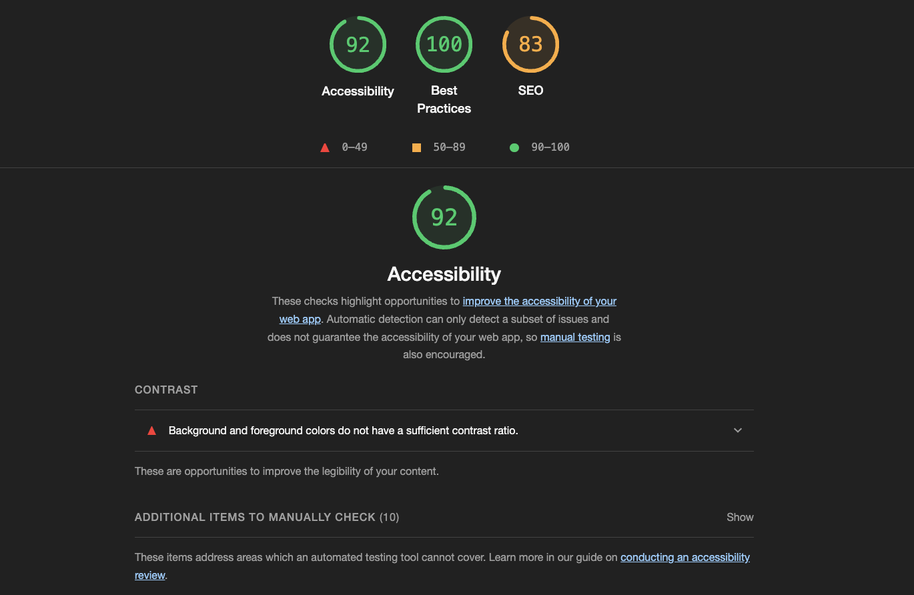
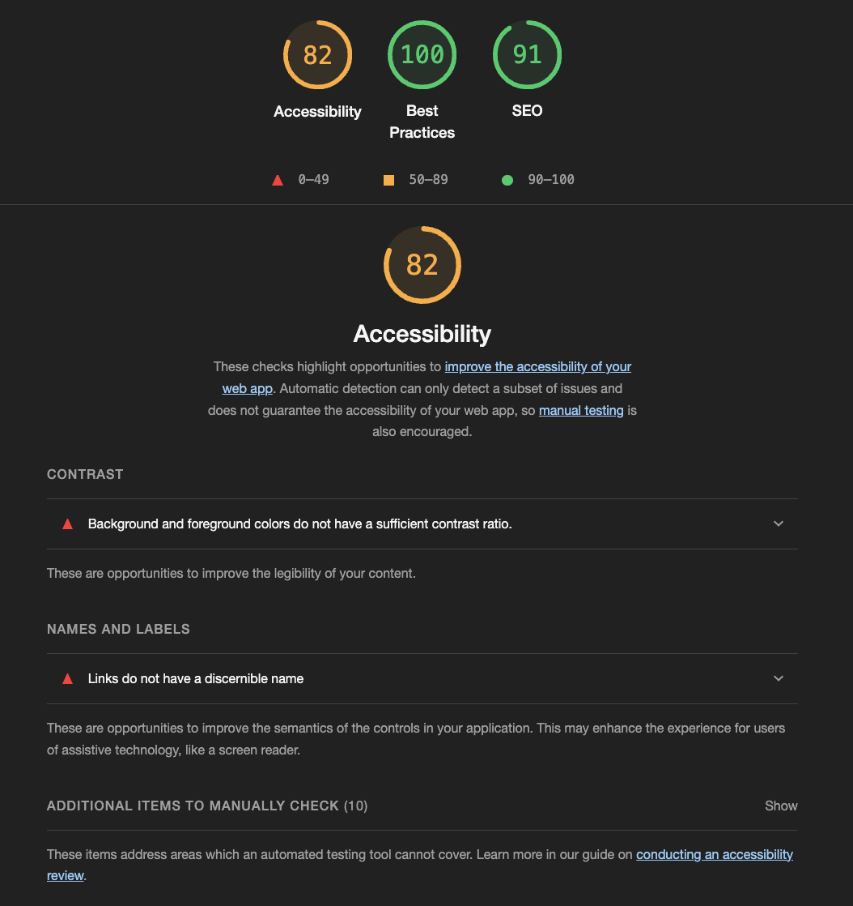
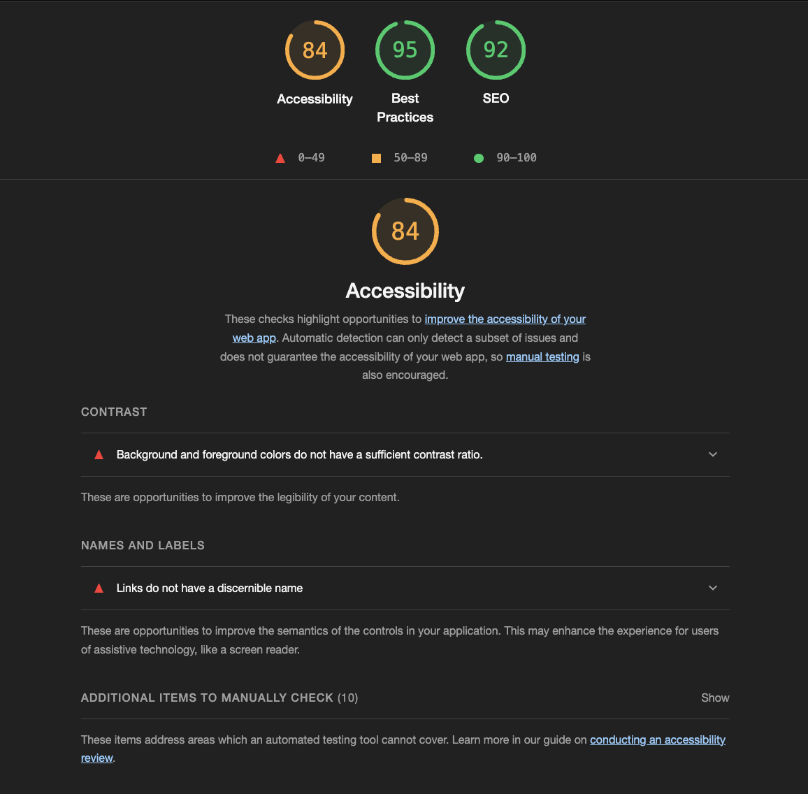
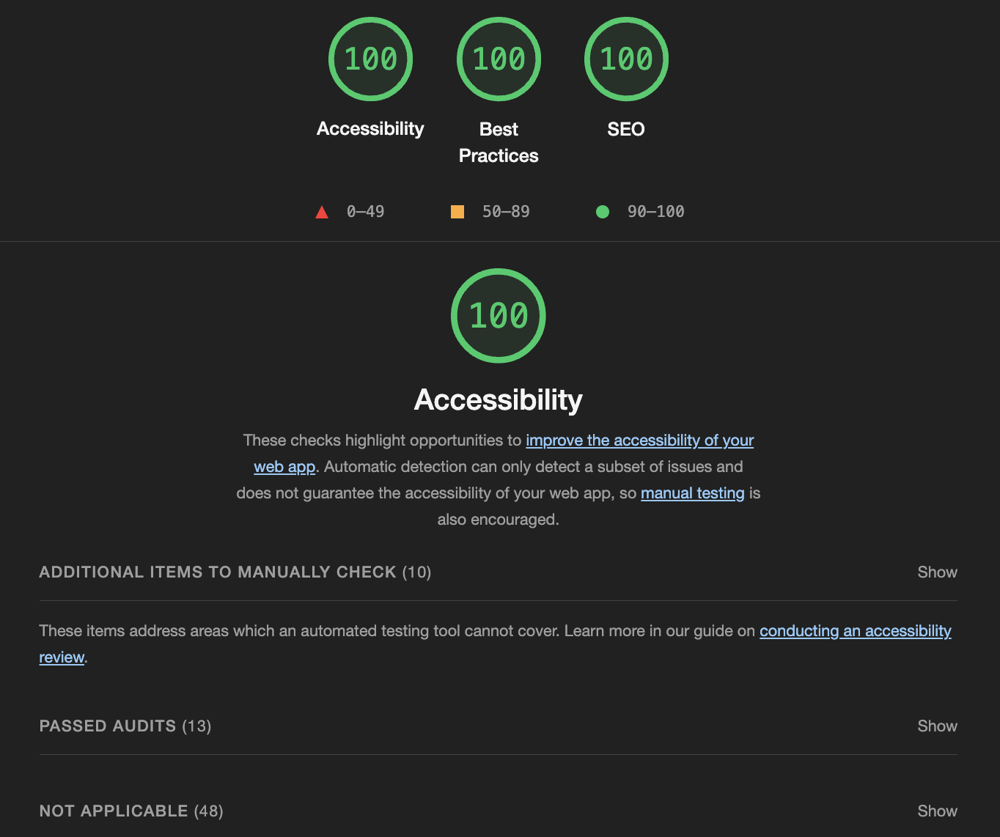
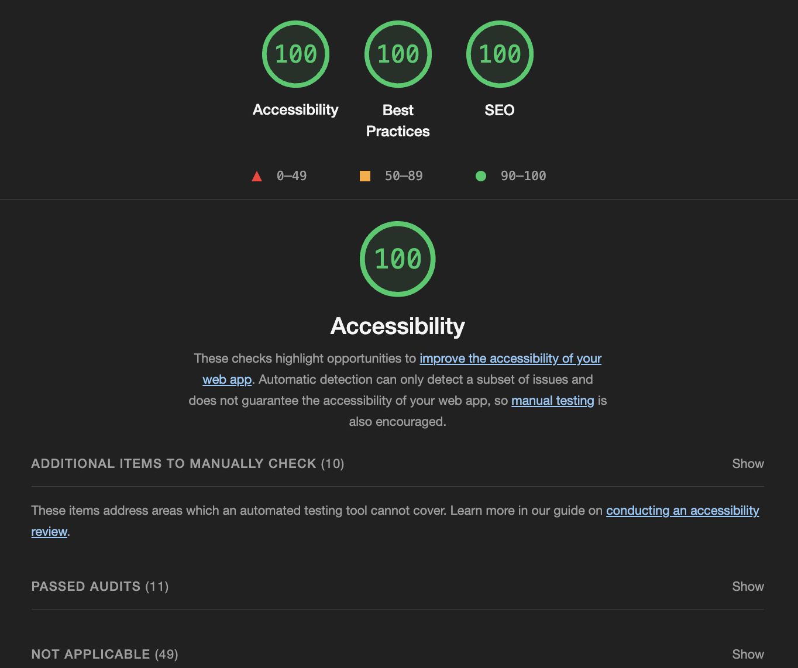
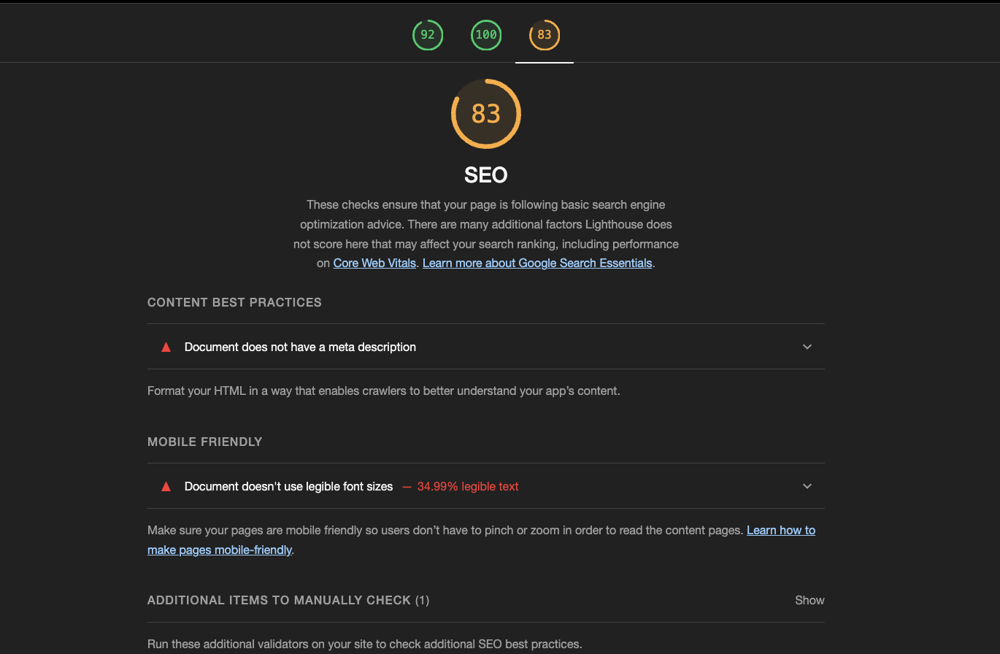
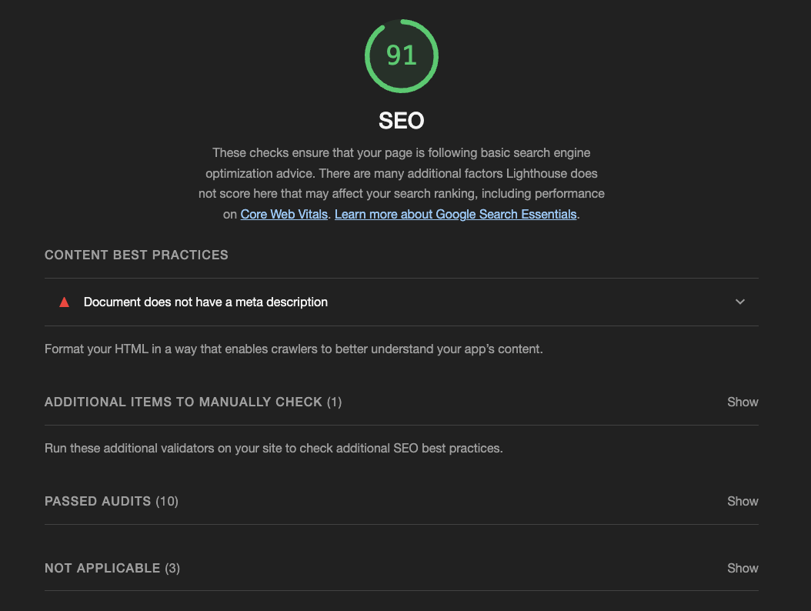
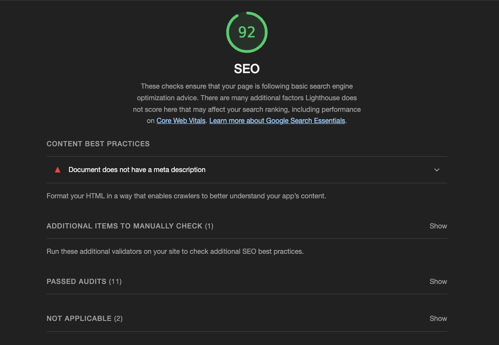

SEO, UU, Microdata & Meta-data
Nøkkelord
SNKR, snkr, sko, sneakers, støvletter, damesko, herresko, barnesko, vintersko, høstsko, sommersko, fritidsko, skomote, skobutikk, sko på salg, sko salg, komfortable sko, joggesko, boots, hvite sneakers, hvite sko, svarte sneakers, svarte sko, skopleie, skotilbehør, ugg, uggs, nike, adidas, vagabond, air max, air force
Valget av disse nøkkelordene er valgt ut for å optimalisere synligheten og tilgjengjeligheten til skobutikken SNKR. som tilbyr trendy sneakers og bestselgere innen skomote. Her er geografiske områder, interesse og populæritet tatt med i betrakning. Ved å inkludere denne variasjonen av nøkkelord, har jeg sikret en bred dekning som appelerer til målgruppen min i tillegg til forskjellige interesser og behov innen sneakers.
ACCESIBILITY (UU)
I dette tilfellet var det ingen store endringer som måtte forbedres. Jeg valgte å dokumentere UU og SEO samtidig med før- og etterbilder da For å oppnå høyest mulig score har jeg blant annet lagt til mørkere kontrastfarge i header og footer, endret skriftstørrelse, lagt til navn på enkelte linker som manglet dette og endret rekkefølgen i h-tagger.
Before
Advarselmeldinger:
- For liten kontrast mellom bakgrunn og skrift.
- Linker har ikke et navn
Forside:
Hjelpside:
Produktside:
After
Forbedrende tiltak for UU:
Forside:

Hjelpside:
Produkside:
SEO
TEKST FOR SEO
Before
Advarselmeldinger:
Forside:
Hjelpside:
Produktside:
After
Forbedrende tiltak for SEO:
Forside:
Hjelpside:

Produktside:
Andre forbedringer
Gjennom denne prosessen har jeg gjort visse endringer i html og css for bedre funksjonalitet i nettsiden. Under ligger før og etterbilder av endringer som har blitt gjort. Endringene er også kommentert i html-filene og css.
Before: